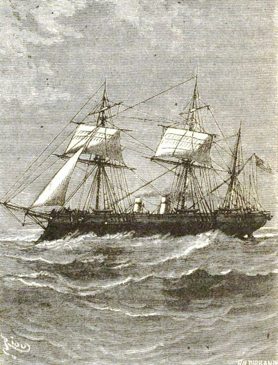

Фрегаты
Современный Фрега́т (от итал. fragata; fregata — разновидность галер Средиземноморья) — класс военно-морских кораблей, предназначенных для поиска и уничтожения атомных подводных лодок в море, противолодочного охранения, противовоздушной и противоракетной обороны авианосцев.
В русском языке термин «фрегат» появился при Петре I. В начале имел две формы «фрегат» и «фрегата». В форме «фрегат» слово было заимствовано из голландского языка, в форме «фрегата» из немецкого или прямо из французского. Во французский язык слово попало из итальянского и впервые упоминается в «Декамероне» Джованни Боккаччо. Более ранняя этимология слова неизвестна.
Виды Фрегатов
Гребные
По своей конструкции римские боевые корабли принципиально не отличаются от кораблей Греции и эллинистических государств Малой Азии. У римлян мы встречаем те же десятки и сотни весел в качестве основного движителя судна, ту же многоярусную компановку, приблизительно ту же эстетику фори ахтерштевней
Читать далее...Парусные
Основной, наиболее точно и распространенной классификацией является деление античных боевых кораблей в зависимости от количества рядов весел. Однако дальше четкая классификация "смазывается". В античной литературе можно встретить упоминания гептер/септер, октер, эннер, децемрем и т.д.
Читать далее...Паровые
Главным оружием римского корабля были — морские пехотинцы. Если греки и эллинистические государства в качестве основного "тактического приёма" использовали по большей части — таранный удар, то римляне ещё в "Первую Пуническую" войну сделали ставку на решительный абордажный бой.
Читать далее...